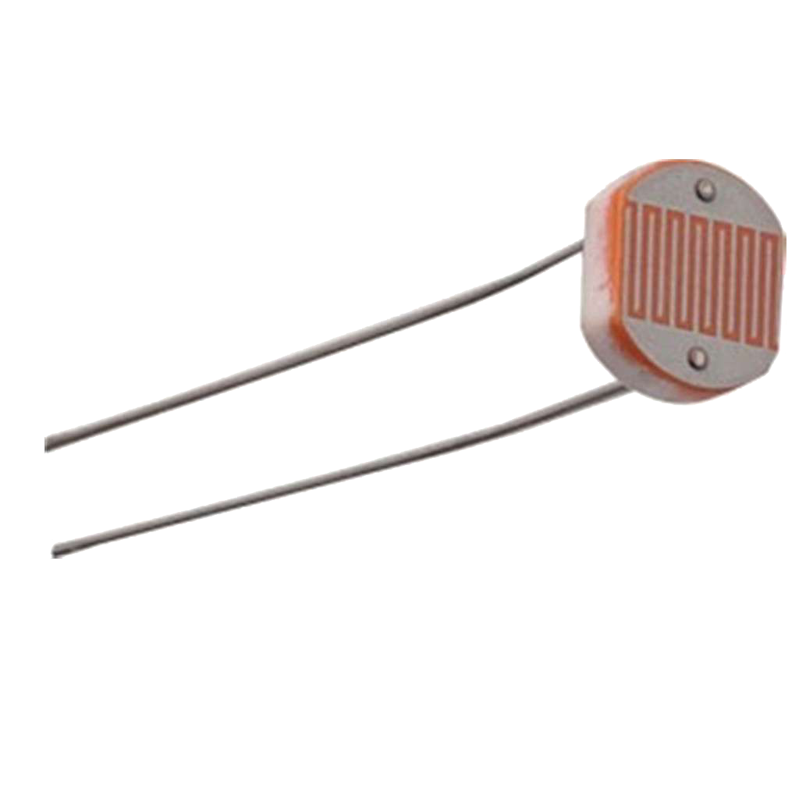

Transmisión de Información mediante Ondas Electromagnéticas: Intensidad Luz Visible

LDR: 14,0
8,0 cm
Distancia LED de datos - fotoresistencia (cm)
Mensaje
Cada símbolo dura 5 s. El LED de inicio/cierre emite 400. El LED de datos transmite 1 con 255 y 0 con 100. Puedes superponer hasta 3 distancias en colores distintos.
Trazas cargadas: 0 de 3.